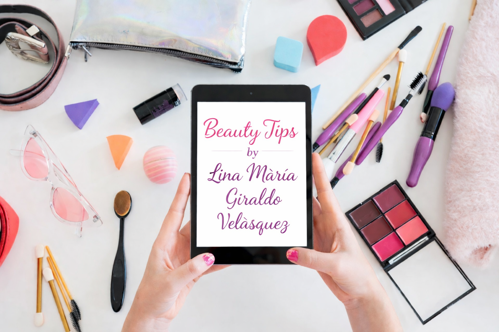
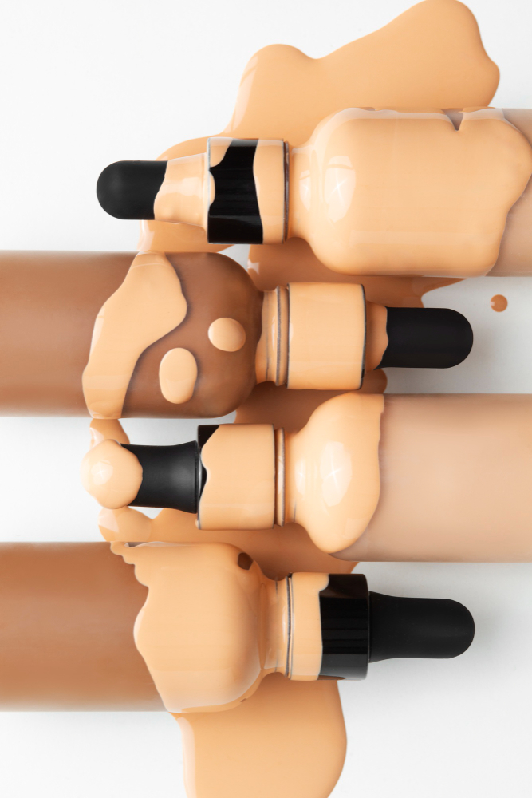

¡Hola! Soy Lina María Giraldo Velásquez! 💖
Bienvenida a mi espacio de belleza. Aquí te contaré todo sobre mis productos favoritos de maquillaje y cuidado de la piel.

En este blog encontrarás mis recomendaciones de productos, consejos sobre cuidados de la piel, y las últimas tendencias de maquillaje.
Mis Productos Favoritos:
-

Base de Maquillaje
Deja la piel luminosa y radiante. Ideal para todo tipo de piel.
-

Crema Hidratante
Con factor de protección solar, perfecta para el día a día.
-

Paleta de Sombras
Tonos neutros para un maquillaje natural y elegante.
Sobre mí
¡Hola! Soy Lina María Giraldo Velásquez 💄✨
Soy una apasionada del mundo de la belleza y todo lo que tiene que ver con el cuidado personal. Me encanta aprender, probar y compartir información sobre cuidado de la piel, maquillaje, productos de belleza y tips que nos ayuden a resaltar nuestra belleza natural. Para mí, la belleza no solo se trata de verse bien, sino también de sentirse segura, cuidar la piel y dedicar tiempo a uno mismo.
En este blog encontrarás contenido de Beauty by Lina, un espacio creado con mucho cariño donde compartiré consejos de skincare, rutinas de cuidado facial, recomendaciones de productos, tips de maquillaje, tendencias de belleza y experiencias personales dentro de este maravilloso mundo.
Mi objetivo es que este blog sea un lugar donde puedas aprender, inspirarte y descubrir nuevas formas de cuidar tu piel y realzar tu belleza, sin importar tu estilo o nivel de experiencia con el maquillaje.
Si te apasiona la belleza tanto como a mí, este espacio es para ti. 💖
Consejos de maquillaje para resaltar tu belleza natural – Beauty by Lina
Este invierno, la piel necesita más que nunca tus cuidados para maquillarte bien. Aquí te dejamos unos consejos esenciales:
El maquillaje es una de las mejores herramientas para resaltar nuestra belleza y expresar nuestra personalidad, y en el día a día nos permite enfrentar diferentes estilos, ocasiones y tendencias. 💄✨
El maquillaje es una herramienta maravillosa para expresar nuestra personalidad, resaltar nuestros rasgos y sentirnos más seguras. Sin embargo, más allá de seguir tendencias, lo más importante es aprender a usarlo de una forma que favorezca nuestro rostro y nos haga sentir cómodas.
Uno de los pasos más importantes antes de maquillarte es preparar bien la piel. Una piel limpia e hidratada permite que el maquillaje se vea mucho más natural y dure por más tiempo. Utilizar una crema hidratante adecuada para tu tipo de piel y, si es posible, un primer, ayudará a que la base se aplique de manera uniforme.
Otro consejo clave es elegir la base correcta. Es importante que el tono de la base sea lo más parecido posible a tu tono natural de piel para evitar diferencias entre el rostro y el cuello.
Los correctores también son grandes aliados del maquillaje. Pueden ayudarte a cubrir ojeras, pequeñas imperfecciones o zonas que necesiten un poco más de iluminación.
En cuanto a los ojos, no siempre es necesario utilizar muchos productos. A veces, una buena máscara de pestañas y un delineado suave pueden hacer una gran diferencia.
Las cejas también juegan un papel muy importante en el maquillaje, ya que enmarcan el rostro.
Finalmente, no olvides los labios. Puedes optar por tonos naturales para un look diario o colores más intensos cuando quieras un maquillaje más llamativo.
Recuerda que el maquillaje no tiene reglas estrictas. Lo más importante es divertirte, experimentar y encontrar los estilos que mejor te hagan sentir.